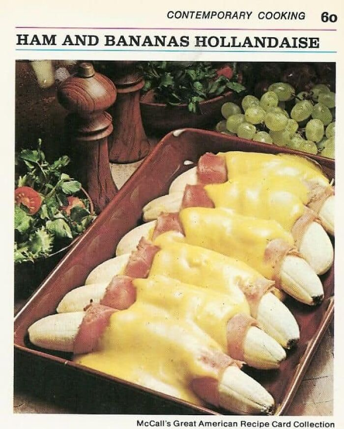

Ham and Bananas Hollandaise

Description
Ham and some fruits hmmm.. The perfect breakfast dish to start your day!
Ingredients
- 6 medium bananas
- 1/4 cup lemon juice
- 6 thin slices boiled ham (about 1/2 lb)
- 3 tablespoons prepared mustard
- 2 envelopes (11/4-oz size) hollandaise sauce mix
- 1/4 cup light cream
Steps
-
Preheat oven to 400F. Lightly butter 2-quart, shallow baking dish.
-
Peel bananas; sprinkle each with 1/2 tablespoon lemon juice, to prevent
darkening.
-
Spread ham slices with mustard. Wrap each banana in slice of ham.
Arrange in single layer in casserole. Bake for 10 minutes.
-
Meanwhile, make sauce: In small saucepan, combine sauce mix with 1 cup
water, 1 tablespoon lemon juice, and cream. Heat, stirring, to boiling;
pour over bananas. Bake 5 minutes longer, or until slightly golden.
Back to Main Menu